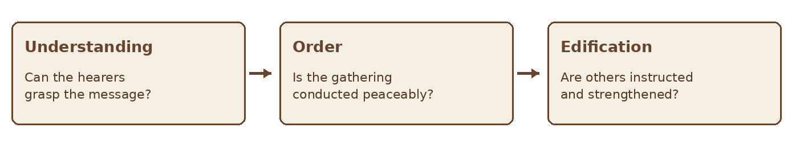

GIFTS OF THE HOLY SPIRIT · BIBLE STUDY
Tongues and Interpretation
A Bible study on understandable worship and the differing Presbyterian views
STUDY EIGHT • SPEAKING IN TONGUES & INTERPRETATION
“Let all things be done for building up.” — 1 Corinthians 14:26
Paul lists varieties of tongues and their interpretation separately in 1 Corinthians 12:10. He treats them together when discussing the gathered church: a public contribution must be intelligible to others if it is to build them up. This combined study examines the biblical passages without assuming that a Presbyterian reader or congregation practices these gifts today. It also identifies where Christians disagree about their nature and continuation.
Scripture at a Glance
| Passage | Contribution to the study |
|---|---|
| Acts 2:1–13 | At Pentecost, people from many places hear the mighty works of God in their own languages. |
| Acts 10:44–48; 19:1–7 | Tongues appear in two further accounts of the Spirit’s work in Acts. |
| 1 Corinthians 12:7–11, 27–31 | Paul names kinds of tongues and interpretation as distinct gifts; not all possess the same gift. |
| 1 Corinthians 13:1–13 | Love, rather than a striking gift, is indispensable. |
| 1 Corinthians 14:1–28, 33, 39–40 | Paul emphasizes understanding, interpretation, building up, and order in the assembly. |
1 Why Study the Two Gifts Together
The list in 1 Corinthians 12:10 names “various kinds of tongues” and “the interpretation of tongues” separately. Yet 1 Corinthians 14 repeatedly connects their use in the assembly. Without an interpretation, the congregation cannot understand what was said or receive instruction from it. Paul tells the speaker to remain silent in the church when no interpreter is present (14:27–28).
Combining these gifts in one chapter preserves the distinction in Paul’s list while following his practical concern. His question in 1 Corinthians 12:30 expects that not everyone speaks in tongues and not everyone interprets.
Figure 1 Why Paul joins them in gathered worship
2 What Happens at Pentecost
Acts 2:1–13 describes the Spirit’s coming at Pentecost. People from many places hear the disciples declaring God’s mighty works in their own languages. The passage emphasizes that the hearers
understand across language boundaries. Peter then explains the event and proclaims Jesus Christ to the crowd.
Acts 2 is a particular event in the history of the church. It does not by itself settle every question about tongues in Corinth. Christians debate whether all New Testament examples involve identifiable human languages or whether Paul also describes speech of another kind. The texts should be compared carefully rather than treated as though every detail is identical.
| Acts 2 | 1 Corinthians 12–14 |
|---|---|
| The crowd hears in its own languages. | Paul discusses gifts and their use in a local congregation. |
| Peter publicly explains the event. | Paul insists that the assembly understand what is said. |
| The story marks a significant moment in the spread of the gospel. | The instructions address order and the common good in worship. |
3 What Paul Emphasizes in Corinth
First Corinthians 14 addresses a gathering where speech that others cannot understand fails to instruct them. Paul values intelligible words in the church and says the one speaking in a tongue should pray to interpret (14:13). He does not make the experience itself the test of its usefulness to the congregation. The benefit to others matters.
Paul’s instructions for the assembly limit speakers to two or at most three, one at a time, with someone to interpret. If no one can interpret, the person is to remain silent in the church and speak to themselves and to God (14:27–28). The chapter closes by calling for fitting and orderly practice. These are instructions within the Corinthian setting, not an invitation to pressure every church to reproduce the setting.

Figure 2 Paul’s priorities in public worship
4 A Presbyterian and Reformed Lens
Presbyterian churches share a concern for Scripture, intelligible worship, and ordered oversight, but they do not all reach the same conclusion about contemporary tongues. Many in the historic Reformed tradition understand the extraordinary revelatory gifts as belonging to the church’s foundational period. Westminster Confession of Faith 1.1 says that former ways of revealing God’s will have ceased. How that statement applies to particular modern claims is discussed differently among Presbyterians.
Other Presbyterians are open to the possibility of such gifts while insisting on scriptural testing, pastoral oversight, and the good of the congregation. A Presbyterian Church (U.S.A.) study has discussed charismatic experiences and the need for mutual respect within the church. This chapter does not require a reader to resolve the larger debate before understanding what Paul wrote.
| Question | A careful approach |
|---|---|
| What did Paul address? | Read the Corinthian text in its original argument. |
| Question | A careful approach |
|---|---|
| How do Presbyterians differ? | State the congregation’s actual teaching rather than assuming one universal practice. |
| What is shared? | Keep Scripture, love, understanding, and the building up of the church central. |
5 What This Study Does Not Require
A reader can study these passages without seeking a tongues experience. Paul’s questions in 1 Corinthians 12:29–30 make clear that the members of the body do not all exercise the same gifts. A person should not be told that speaking in tongues is necessary evidence of conversion or spiritual maturity.
Likewise, a decision not to use these gifts in a particular congregation should be explained by that church’s reading of Scripture and its worship practice, not by pretending the passages are absent. Honest study can acknowledge the texts, the history of interpretation, and the differences among faithful Christians.
6 Discernment and Public Claims
If someone reports speaking in tongues or interpreting, distinguish the experience from the claim about its meaning and use. Ask what happened, who understood it, what was said, and whether the event is being used to build others up or to assign spiritual status. Do not invent an interpretation or pressure a person to perform.
Figure 3 Weigh a claim within a church’s teaching
A church’s leaders are responsible for its public worship. Private experiences should not be used to bypass that responsibility. Where believers differ, they can speak respectfully and avoid treating their position as a measure of another Christian’s faith.
7 A Practical Study Journal
Use these prompts to compare the passages before drawing a conclusion about current practice.
| Prompt | Record |
|---|---|
| What happens in Acts 2? | Identify the speakers, hearers, and understood content. |
| What does Paul list? | Note the separate gifts in 1 Corinthians 12:10. |
| What requires interpretation? | Read 1 Corinthians 14:5, 13, and 27–28. |
| What is the purpose? | Identify the common good and building up of the church. |
| What remains debated? | Separate the text from claims about continuation and language. |
| What does my church teach? | Consult its confession, leaders, and worship practice. |
| Prompt | Record |
|---|---|
| How should I respond? | Choose honesty, respect, and obedience to Christ. |
Practice Case
A visitor tells a Presbyterian small group that everyone must speak in tongues to demonstrate that they have the Holy Spirit. One member points to 1 Corinthians 12:30 and asks whether Paul expected all believers to exercise this gift. The group reads chapters 12–14 together and asks its elders how its congregation approaches these passages.
Discuss which claim can be answered directly from Paul’s text, which questions require further interpretation, and how the group can treat the visitor with respect while refusing pressure. The aim is to learn, not to stage an experience or dismiss a person.
Reflection and Discussion
- Why does interpretation matter for the gathered church?
- What is clear in Acts 2, and what does it leave open about Corinth?
- How does Paul’s body image challenge the idea that all believers must have one gift?
- How can a Presbyterian congregation study a disputed gift honestly and peaceably?
A Prayer for Understanding
Father, thank You for giving Your Spirit to Your people. Help us read Your Word carefully and worship You with understanding, love, and peace. Where we disagree, give us humility and respect. Keep us from making one experience a measure of another believer’s standing with You. Build up Your church through the gifts and service You provide, and keep our attention on Jesus Christ. Amen.
Further Study
Read Acts 2:1–41 and 1 Corinthians 12–14 in full. Compare Acts 10:44–48 and 19:1–7. Read Westminster Confession of Faith 1.1 and consult the teaching of your own congregation or denomination. Distinguish what Scripture explicitly says from later theological conclusions and modern experiences.